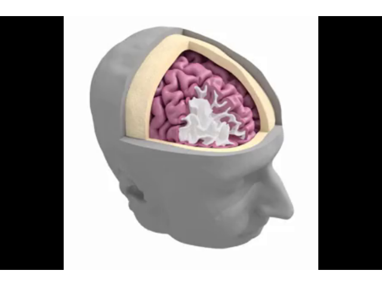

Note
Click here to download the full example code
Video playing made simple¶
This shows how to play a video file in expyfun. It requires that FFmpeg (for Pyglet >= 1.4) or AVBin (otherwise) has already been installed.
@author: drmccloy
exp_name: simple video example
date: 2022-01-12 20_04_10.765288
file: /home/circleci/project/examples/stimuli/simple_video.py
participant: foo
session: foo
2022-01-12 20:04:10,765 - INFO - Expyfun: Using version 2.0.0.dev0 (requested dev)
2022-01-12 20:04:10,766 - INFO - Expyfun: Setting up sound card using pyglet backend with 2 playback channels
2022-01-12 20:04:10,962 - WARNING - Expyfun: Mismatch between reported stim sample rate (24414) and device sample rate (44100). Experiment Controller will resample for you, but this takes a non-trivial amount of processing time and may compromise your experimental timing and/or cause artifacts.
2022-01-12 20:04:10,962 - INFO - Expyfun: Setting up screen
2022-01-12 20:04:10,984 - EXP - Expyfun: Set screen visibility True
2022-01-12 20:04:11,015 - INFO - Initialized [720 480] window on screen XlibScreen(display=<pyglet.canvas.xlib.XlibDisplay object at 0x7f78ceb18610>, x=0, y=0, width=1400, height=900, xinerama=0) with DPI 69.73
2022-01-12 20:04:11,015 - INFO - Expyfun: Initializing dummy triggering mode
2022-01-12 20:04:11,016 - INFO - Expyfun: Initialization complete
2022-01-12 20:04:11,016 - EXP - Expyfun: Participant: foo
2022-01-12 20:04:11,016 - EXP - Expyfun: Session: foo
2022-01-12 20:04:12,219 - INFO - Expyfun: Exiting
2022-01-12 20:04:12,221 - EXP - Expyfun: Audio stopped and reset.
from expyfun import (ExperimentController, fetch_data_file, analyze as ea,
building_doc)
print(__doc__)
movie_path = fetch_data_file('video/example-video.mp4')
ec_args = dict(exp_name='simple video example', window_size=(720, 480),
full_screen=False, participant='foo', session='foo',
version='dev', output_dir=None)
screenshot = None
with ExperimentController(**ec_args) as ec:
ec.load_video(movie_path)
ec.video.set_scale('fit')
t_zero = ec.video.play()
while not ec.video.finished:
if ec.video.playing:
fliptime = ec.flip()
if screenshot is None:
screenshot = ec.screenshot()
if building_doc:
break
ec.delete_video()
ec.flip()
ec.screen_prompt('video over', max_wait=1.)
ea.plot_screen(screenshot)
Total running time of the script: ( 0 minutes 1.713 seconds)